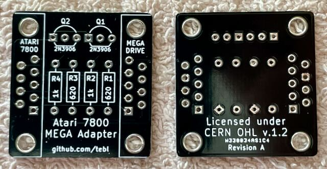

Mit diesem Adapter kann man einen Sega Megadrive Controller am Atari 7800 verwenden.
Die Platine ist von tebl.
Projekt-Homepage • Interakiver Bestückungsplan • Schaltplan

| Komponente | Anzahl | Preis | Anbieter |
| Platine | 1 | €1.00 | |
| 620Ω Widerstand | 2 | €0.06 | Reichelt |
| 1kΩ Widerstand | 2 | €0.08 | Reichelt |
| 2N3906 Transistor | 2 | €0.10 | Reichelt |
| 90° D-Sub-9 Buchse | 1 | €0.35 | Reichelt |
| 90° D-Sub-9 Stecker | 1 | €0.36 | Reichelt |
| nur Platine | €1.00 | ||
| Bausatz | €1.95 |